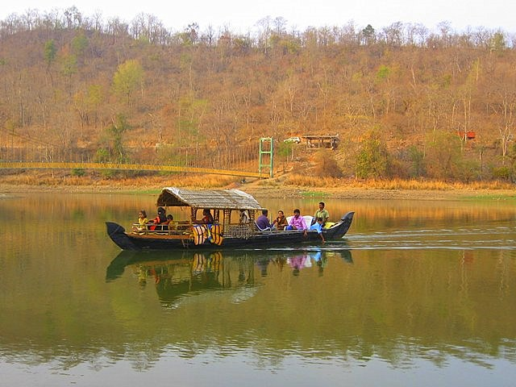

|
|
Warangal |
|

Pakhal Lake, Warangal District, TelanganaPakhal Lake is a man made lake, located in the Warangal District of Telangana.
Previously, this lake was included in the Warangal District of Telangana State
Pakhal Lake is a man prepared lake in Pakhal Wildlife Sanctuary. This lake was built in a small tributary of Krishna River.
Pakhal Lake is situated about 50 kilometres east of Warangal. This lake is well connected by road passing through the east
while taluk headquarters of Narsampet which about 12 km away from Warangal District.
This artificial lake, Pakhal Lake is constructed in the midst of undulated mountainous province. This lake is boasts of impenetrable
forest. In popular belief, the construction of Pakhal Lake dates back to the 1213 A.D. by Ganapathideva, a Kakatiya ruler.
The area of Pakhal Lake acquires 30 sq.km. The scenic beauty around this lake is mesmerizing and captivating. Due to the
panoramic view of the lake it has become a famous picnic spot of Warangal district. This spot is well known as the hotspot for
weekend tourism.
Near Pakhal Lake, there lies a forest region which is also known as Pakhal Wildlife Sanctuary. Pakhal Wildlife Sanctuary is an
artificial lake, completed in 1213 AD by the Kakatiyas. Pakhal Wildlife Sanctuary is spread over 860-sq-km consisting of a large
plateau surrounded by low hills. The environment and the Pakhal Lake form the core area of the sanctuary. The vegetation
consists of tropical dry deciduous mixed forests, bamboo and mixed teak forests. The deciduous trees present in Pakhal Lake
are Adina cordifolia, Bombax ceiba, Bridelia retusa, Cleistanthus collinus, Cochlospermum religiosum, Emblica officinalis,
Dalbergia latifolia, Flacourtia indica, Garuga pinnata. There are also many climbers, woody herbs and shrubs and monsoon plants.
There are the widespread grasslands occur near the Pakhal Lake. The animals present in Pakhal Wildlife Sanctuary are leopard,
sambar, Nilgai sloth bear, chital, chowsingha (four-horned antelope), chinkara (mountain gazelle), blackbuck, Wild Boar.
There is the large concentration of migratory waterfowls and waders arrive at the lake between November and March.
The reptiles present in Pakhal Wildlife Sanctuary are the python, cobra, common krait, monitor lizard and crocodiles.
Pakhal Lake and Pakhal Wildlife Sanctuary both are the centres of attraction to the local and international tourists.